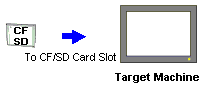
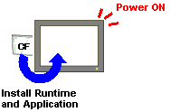

|
|
|
|
|
|
|
|
The Multi-Install option provides you with the capability to install a Vijeo Designer application and run-time data files, including recipe files, from one target to a new target. The restore capability is supported for all targets that support CF Card/SD Card or USB drive. For a list of targets that support CF Card/SD Card or USB drive, see Appendix 5, Hardware Specifications.
To enable an application to be restored on another target, at initial project setup you should configure your project as follows:
Set up the CF Card/SD Card configuration or the USB configuration.
During normal operation, if your target machine fails, you can then follow the procedure to restore the files from the drive (CF Card/SD Card or USB drive) to a new target.

Only the files on the Secondary Drive will be restored on the new target when the CF Card/SD Card or USB drive is inserted. Files maintained on the Main Drive or in the SRAM will not be restored.
The following data will not be restored on the new target when the CF Card/SD Card or USB drive is inserted and will need to be reconfigured:
The run-time values of retentive variables
Security system data modified since the last download.
If data logging records are kept in SRAM and File, only the most recently flushed data will be in the removable drive.
In Vijeo-Designer, in the Navigator window's Project tab, right-click the Target node and click Properties to open the Property Inspector. Set Download to File System.
In the Path property, define the location of the CF Card/SD Card reader or the USB drive.
In the Install Options property, select Multi Install.
Open the Data Locations dialog box, and select the following data location for Recipe Files:
Secondary Drive, if downloading to a CF Card/SD Card
Optional Drive, if downloading to a USB drive.

If you set WebGate or WebServer to run on the Optional drive, you must remove the USB drive after the installation is complete.
Download to a CF Card/SD Card.

Use CF Cards manufactured by Schneider Electric only. CF Cards from other manufacturers do not meet required specifications. For more information about CF Cards you can use, see Appendix 1, Hardware Manuals.
Insert the CF Card/SD Card in the target machine's CF Card/SD Card slot and turn on the machine.
|
|
If you are using a target machine with a CF Card: On the target machine's CF Card dip switches, make sure DipSwitch1 = ON so it loads the application from the CF Card into internal memory (flash memory). When this dip switch is OFF, the target machine runs the user application stored in internal memory. Turn on the target machine to install the user application and update the run-time system files. |
|
 |
 |
After the installation is completed, turn off the machine.
If you are using a target machine with a CF Card, set DipSwitch1 to OFF.
Turn on the target machine for normal use.
Remove the CF Card/SD Card from the failed target machine.
Insert the CF Card/SD Card into the new target machine.
If you are using a target machine with a CF Card, set DipSwitch1 to ON.
Turn on the target machine to install the user application and the recipe files.
If you are using a target machine with a CF Card, turn off the target machine, and set DipSwitch1 to OFF.
If you had turned off the target machine in step 5, turn on the target machine.
Runtime and the latest modified recipe data are all loaded into the new target machine.
Download to a USB drive.
Insert the USB drive to the target machine.
At the prompt to install the new application, press Yes.
After the installation is completed, press Restart to restart the machine for normal use.

Each subsequent time the target machine is restarted, press No at the prompt to install the new application.
Remove the USB drive from the failed target machine.
Insert the USB drive into the new target machine.
Turn on the target machine, and press Yes to install the application.
After the installation is completed, press Restart to run the application. Runtime and the latest modified recipe data are all loaded into the new target machine.